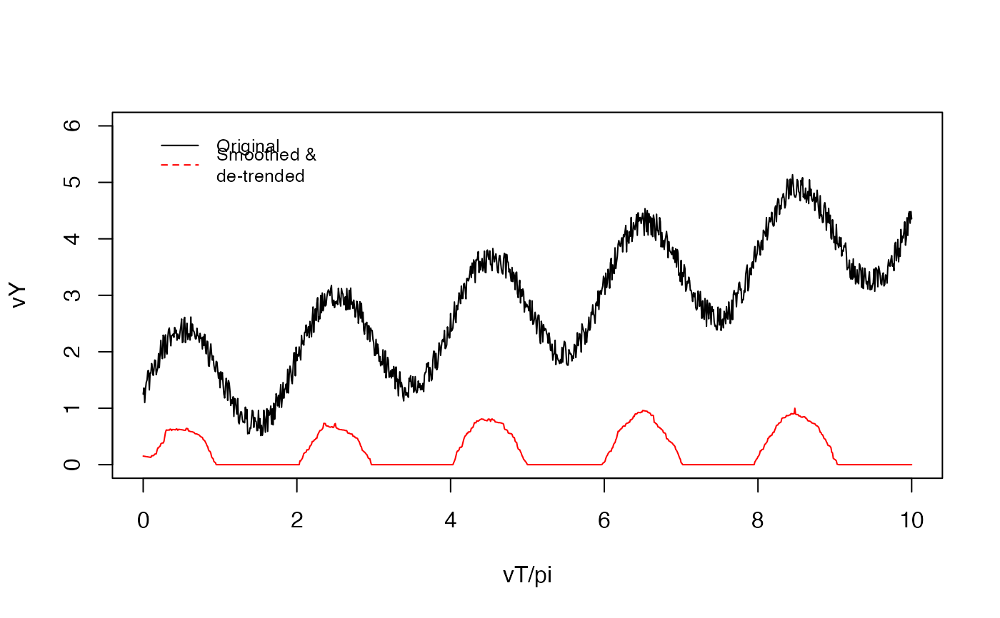

detrendTS.RdFirst a short-term median filter with size smoothK is applied to remove fast noise from the time series.
The subsequent de-trending can be performed with a long-term median filter with the size biasK (biasMet = "runmed")
or by fitting a polynomial of degree polyDeg (biasMet = "lm").
detrendTS(
x,
smoothK = 3L,
biasK = 51L,
peakThr = 0.2,
polyDeg = 1L,
biasMet = c("runmed", "lm", "none")
)a numeric vector with the time series for smoothing.
an integer, size of the short-term median smoothing filter, default 3L.
an integer, size of the long-term de-trending median filter, default 51L.
a threshold for rescaling of the de-trended signal, default 0.2.
an integer, sets the degree of the polynomial for lm fitting; default 1.
a string with the de-trending method, default "runmed".
a numeric vector with a smoothed and/or de-trended and rescaled time series.
library(ARCOS)
vT = seq(0, 1, 0.001) * 10 * pi
vY = sin(vT)+vT/10 + 1 + runif(length(vT))/2
vYs = ARCOS:::detrendTS(vY, smoothK = 21, biasMet = "lm")
plot(vT/pi, vY, type = "l", ylim = c(0,6))
lines(vT/pi, vYs, col = "red")
legend(0, 6,
legend=c("Original", "Smoothed &\nde-trended"),
col=c("black", "red"),
lty=1:2, cex=0.8,
box.lty=0)
